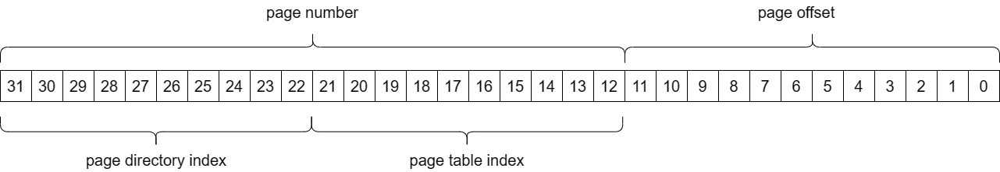
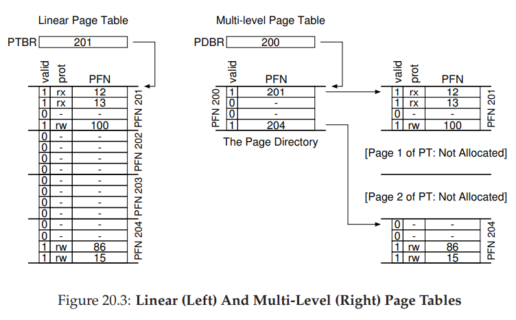

Due Date: 2/21/2023. 9 points
Single person project. Do your own work!
In this project, you will extend a program that emulates the processing of a series of memory access requests to implement key tasks in processing memory requests, including page replacement. This program takes a sequence of memory access requests as inputs and emulates TLB, page table, and page fault handling to process those requests. You will extend this program in four ways: (1) you will add a mechanism to add and resolve page mappings (i.e., map a page number - for the memory access request - to a physical frame number) for a two-level page table; (2) you will add a mechanism to search the TLB to determine the physical address of a memory request on a TLB hit; (3) you will implement two page replacement schemes (second chance/clock and a 3-bit approximation of "least recently used"); and (4) you will implement a mechanism to deallocate page table memory when a process is terminated.
For Project P1, please use the Invitation Link:
https://classroom.github.com/a/pBW6z8-MClick on the invitation link above and then accept the project. By accepting the invitation, you will have access to your private repository containing the starter files provided as a part of the project (it has the source code, test cases, and outputs for the project).
The link for your repository is: "https://github.com/CMPSC-473-Spring-2023/p1-SP2023-<your-github-username>".
The program works as follows: type cmpsc473-p1 input-file output-file mechanism-number at the prompt. The input files will be provided. The output file will contain the results of the processing. The mechanism-number indicates which page replacement algorithm will be applied, where: (0) is for FIFO replacement (code provided); (1) is for the clock (second chance) algorithm; and (2) is for a 3-bit LRU algorithm. We will provide example input files and their expected outputs for each program extension.
NOTE: The paging mechanism that you implement in this project - especially for Tasks 1 and 2 below - is the traditional paging mechanism described in Chapters 18, 19, and 20 of the course textbook. Until you understand those steps, the detailed description for Tasks 1 and 2 below may be hard to follow. Similarly, the page replacement algorithms required for Task 3 are discussed in the book in Chapter 22.
I highly recommend mapping the concept approaches described in the book to the function-level requirements for the programming assignment. If there is a coding task that you cannot map to any conceptual approach, I recommend seeking some help.
The project will consist of the following tasks:
NOTE: For the first two tasks, use the FIFO replacement algorithm (provided) by specifying the mechanism-number of 0. In Task 3, you will add the two other replacement algorithms. For all tasks, each memory request may be made by a different process. Every page table operation runs in the context of the specific process making the memory request.
Task 1: The first task in virtual memory management is to allocate physical frames for virtual memory accesses. The basic process of memory management is implemented by the command_loop function. When a program starts, it has no access to physical memory, so the TLB (tlb_resolve_addr) and the page table (pt_resolve_addr) will fail to resolve the virtual address (vaddr) of the memory request. Thus, your first task is to complete an implementation of pt_demand_page to store the physical frame for a virtual page in a two-level page table.
Task Guidance: The first step in allocating a physical frame for a page is to identify the page table entry to start that page-to-frame mapping. The function PAGE_TO_PTENTRY must be completed to translate a page number (from the virtual address of the access, vaddr) to a page table entry. When a process performs an instruction that references a virtual memory address, we need a physical frame to "back" that virtual page being accessed. Thus, the first step is to store a new mapping between the page and the frame in the page table entry. See the definition of the ptentry_t structure in cmpsc473-p1.h.
In this project, we will use a two-level page table, as described in Section 20.3 of the course textbook. See Figure 20.3 (multi-level version) for the format of the page table in memory. We assume our system uses 32-bit virtual addresses and 4K pages, meaning that: (1) the first (lowest) 12 bits of an address reference the offset within a page and (2) the remaining (highest) 20 bits are the page number. The two-level page table indexes pages using 10 (higher) bits to index the page directory for the page and 10 (lower) bits of the page number to index the page table to find the specific entry with the page-to-frame mapping. The physical address is then computed as shown.
The first-level is called the page directory and consists of an array of 1024 entries - for 2^10 possible page directory indices. These page directory entries consist of only one field, an 8-byte address to the second-level page table entries for a particular page directory entry. If a page directory entry has a non-null page table page (pte_page) field value, the page table is valid. You need to allocate the memory for each page table page dynamically. It will make your life a lot easier if you page-align each page table using posix_memalign. I use this to align the page directory itself, so there is already an example in the code.
Each page table page consists of 1024 entries that are 4 bytes in size. The entries use bit fields to store small values - from 1 bit for "valid" to 20 bits for the "page number." The data structure definitions for page directory entries (pdentry_t), page table entries (ptentry_t), and physical frames (frame_t), among others, are included in cmpsc473-p1.h. Do not modify the cmpsc473-p1.h file! 
Task Details: I provide you with the code to identify a free physical frame in the function pt_demand_page (so your program runs predictably), so your task is to write the code to setup the page table entry for a new page-to-frame (page table) mapping and compute the resultant physical address for virtual address. This task has three modest steps. If you find you cannot perform any of the steps please obtain guidance as the subsequent tasks depend on completing this one.
Your task 1(a): The first step is to write the function PAGE_TO_PTENTRY, which maps a virtual page number to its corresponding page table entry for that page and returns the address of the page table entry, allocating page table memory when required. Please use the guidance above to implement this computation.
Your task 1(b): The second step is to initialize the new page-to-frame mapping by updating the page table entry and frame fields in the function pt_alloc_frame with the expected values. You can set the reference ("ref") and dirty ("dirty") fields of the page table to FALSE initially, as they will be set later by hw_update_pageref, which emulates how the hardware updates these bits. Also, please set the "op" field of the page table to OP_READ or OP_WRITE (should be the values passed into that function). Please figure out the semantics of the other page table and frame fields to assign their initial values.
Your task 1(c): The last step is to compute the physical address for a memory address from the virtual address and frame at the line shown in pt_demand_page. The mechanism to do this is described in Chapter 18.
Task 2: In addition to virtual address translation using page tables, you will also implement virtual-to-physical address resolution for the emulated TLB (tlb_resolve_addr) and for page table hits (pt_resolve_addr).
Your Task 2(a): The TLB is a simple cache (array) of recently used address translations. If a TLB hit is found for a valid entry, the program function tlb_resolve_addr must convert the virtual address (vaddr) to a corresponding physical address (paddr) based on the frame mapped to the page in the TLB. NOTE: That you need to check for a protection fault for the TLB hit entry in tlb_resolve_addr. In general, the "op" of a page-to-frame mapping must be "write" (=1) for a write operation to be allowed. See the check in pt_demand_page for an example.
Your Task 2(b): The function pt_resolve_addr must determine whether there is a valid page table entry for the page, and if so, compute the physical address for the frame mapped for the page by the page table. Use the PAGE_TO_PTENTRY function you already wrote in Task 1(a) to simplify this task. NOTE: That you need to check for a protection fault for the page table lookup as well. See Task 2(a) above.
Task 3: You will need to implement page replacement when the page table/TLB do not contain a reference to that virtual address and all the frames are in use. We will implement two page replacement mechanisms, both of which approximate LRU (Section 22.8): (1) clock algorithm (a.k.a., second-chance) and (2) 3-bit LRU (simply referred to as 'lru' in the codebase). Use these numbers (1 for clock and 2 for 3-bit LRU) as the mechanism-number argument to the cmpsc473-p1 process.
There are two functions that must be implemented for each page replacement mechanism: (1) update, which updates the page replacement data structures when a new page table entry is made valid (allocated) after a page fault (called in the command_loop; and (2) replace, which performs the page replacement mechanism (called in pt_demand_page). The replacement functions must make the same decisions as dictated by the page replacement algorithms.
See an example implementation of FIFO replacement to give you an idea of how to implement replacement mechanisms. The mechanism-number for FIFO replacement is '0'.
Your Task 3(a): First, implement the clock algorithm for page replacement. As each page is mapped to a frame, add the resulting page table entry to a circular list at the end (update). When a page is to be evicted (replace), run the clock algorithm as described in Section 22.8 to choose the page to evict. The associated functions are located in cmpsc473-p1-second.c.
Your Task 3(b): 3-bit LRU is similar to the clock algorithm except that we use 3-bit reference value stored in the frame. As each page is mapped to a frame, add the resulting frame to a circular list at the end (update), as above. In addition, set the most significant bit in the frame's "lru" field (frame_t). That is, initially, the "lru" field value will be 4 or 100 in binary.
When a page is to be evicted (replace), cycle through the entries until you reach an entry with the "lru" value of 0 or 000. As each entry is examined "age" the value in the "lru" by shifting the value one bit to the right (i.e., 100 becomes 010). Should no entry have the value 0, then choose the first entry with the lowest value seen to be evicted. For example, if the lowest "lru" value is 1 or 001 and 10 frames have this "lru" value, evict the first frame visited with that "lru" value. Like the second chance algorithm, set the head of the circular list to be the entry after the evicted entry. Remove the evicted entry from the list.
The associated functions, update and replace are located incmpsc473-p1-lru.c.
Task 4: The fourth task is to properly deallocate the page table memory used by a process when it is terminated through a call to the function kill_process. This function is invoked when the process terminates due to a segmentation fault (e.g., accesses memory address 0) or a protection fault (i.e., accesses a page with more permissions than allocated for that page). The requirement here is to traverse the page directory to find any pages allocated for page table entries (i.e., that your program allocated and stored in the pte_page field of a pdentry_t structure) and free that memory (which also happen to be one page in size). Note that you do not need to traverse page table to invalidate these pages. They will be reclaimed in page replacement eventually (lazily).
The project repository includes basic test cases for each project task (and in some cases, subtasks). Your project code will need to successfully complete these test cases for any credit (at least 50% of task credit). We will run other test cases as well for some tasks.
The test cases produce (cryptic looking) output to the specified output file to record the critical events in memory processing. We describe the event types and meanings below.
The project supplies the following test cases, as the file input-<test-case-id>.txt and the corresponding expected output output-<test-case-id>.txt (under the "sample-outputs" subdirectory.
Task 1: Test cases 1a (page fault handling) and 1b (page fault with FIFO replacement.
Task 2: Test cases 2a (TLB address resolution) and 2b (Page Table address resolution).
Task 3: Test cases 3a (second chance) and 3b (3-bit LRU).
Task 4: Test case 4 (segmentation and page faults).
We will also apply at least one stress test case that includes aspects of Tasks 1, 2, and 4 for one replacement algorithm at a time.
You need to commit four files for this project:
The file commit.txt in which you will store the commit ID for the repository you want us to grade.
The modified file cmpsc473-p1.c, which includes the code for Tasks 1, 2, and 4.
Task 1 (a, b, c): 2 points
Task 2 (a, b): 2 points
Task 3 (a, b): 2 points
Task 4: 1 point
Stress Testing: 1 point
Correct submission: 1 point
To be added as needed with more project info.